Flink¶
1 应用场景¶
批量计算、流式计算、交互计算、图计算
实时报表、实时监控、流式数据分析、实时数仓
2 相较于其他流式处理引擎¶
数据exactly once；吞吐量大每秒千万级；延迟低毫秒级；易用性有很多API
3 核心特性¶
-
统一的数据处理组件栈（batch, stream, graph, ML）
-
时间概念
- 事件时间（Event Time）真正数据产生时间；
- 接入时间（Ingestion Time）数据通过中间件到达flink，在source operator 里产生；
- 处理时间（Processing Time）算子处理的时间。
-
基于分布式轻量级快照（Snapshot）实现容错，check point保证数据不会丢或重复
-
支持有状态计算
- kv存状态
- 有back end支持大数据量的状态持久化
-
高度灵活的窗口计算
-
带反压的连续流模型
- Flow Control，Sink算子传递控制信息到Source，控制处理速率。
-
基于JVM实现了自己独立的内存管理
- 可超出主内存大小，对对象二进制序列化存储，类似于C对内存的管理。
4 集群架构¶
job-worker结构 * JobManager：管理节点，job管理与Checkpoint协调 * TaskManager：计算资源的提供，每个实例部署在单独的机器上 * Client：解析JobGraph提交给JobManager，监控job执行状态。 Client -> JobManager(Job) -> TaskManager(Task)
JobManager¶
- CheckPoint Coordinator
- JobGraph(逻辑图) -> Excution Graph(物理图)
- Task部署
- RPC(Akka ? Actor system ?)
- Job Dispatch
- 集群资源管理，根据集群部署模式不同有不同的实现
- TaskManager注册与管理
TaskManager¶
- Task Excution (Task slot类似于线程池)
- Shuffle Env
- RPC
- Network Manager（TaskManager之间通信Netty）
- 内存管理
- Slot提供给JobManager
Client¶
解析用户提交的jar，生成JobGraph对象（Code -> Dag有向无环图）
JobGraph¶
- 通过有向无环图（Dag）表达用户的程序
- 不同接口程序的抽象表达
- 客户端和集群之间job描述的载体
- 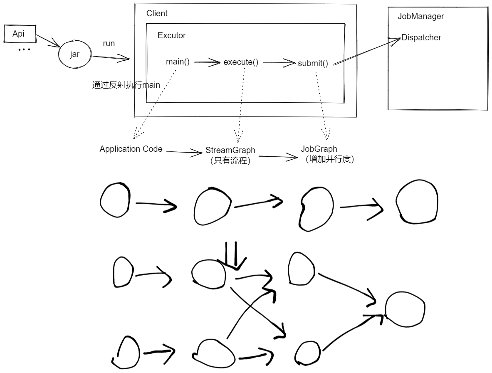
部署模式¶
根据集群的生命周期和资源隔离、程序的 main()方法执行在 client 还是 jobManager 分为三种：
- Session：共享 JM 与 TM，所有 job 都在同一个 runtime 运行；
- Per-job：独享 JM 与 TM，所有 job 单独启动一个 runtime；
- Application：
- main() 在 Cluster 上运行；
- 每个 Application 对应一个 runtime，Application 中包含多个 job
5. 分布式流处理模型¶
如何兼顾数据一致性、大规模数据处理、无界乱序处理
DataFlow模型¶
1、数据源（Source）； * 打通外部输入，跟中间件交互（MQ） * 不同的数据源可以按照并行度分成不同的算子
2、转换操作（Operation）；filter transform connect转换成结果
3、数据输出（Sink）。
数据从上一个Operation节点直接push到下一个Operation节点。 节点可以运行在不同的Task线程中，数据在Operation间传递。 数据有shuffle过程，但是是推不是MR的拉。
DataStream API¶
SQL -> Table API -> DataStream / DataSet API -> Stateful Stream Processing
DataStream 是一个不可变的数据集合，只能使用 DataStream API去操作（转换transformation）。
程序结构：
- 设置运行环境
- StreamExecutionEnvironment 是所有flink程序的基础，通常getExecutionEnvironment()静态方法就可以根据上下文获得一个环境。
- final StreamExecutionEnvironment env = StreamExecutionEnvironment.getExecutionEnvironment();
- 配置数据源读取数据
- 运行环境提供了一些方法，从数据源获取数据，生成一个DataStream
- addSource关联一个新的source function addSource(new FlinkKafkaConsumer<>(...))
- DataStream\<String> text = env.readTextFile("file:///path/to/file");
- 进行一系列转换
- 调用DataStream上具有转换功能的方法（应用转换）来派生新的DataStream
- DataStream\<Integer> parsed = text.map(new MapFunction\<String, Integer>(){
- @Override
- public Integer map(String val) {return Integer.parseInt(val);}
- });
- 配置数据汇写出
- 调用sink输出的方法
- 提交执行
- 使用 StreamExcutionEnvironment 的 excute() 方法来触发程序执行。
- executeAsync()方法来触发作业异步执行。它会返回一个
JobClient，你可以通过它与刚刚提交的作业进行通信 - 所有 Flink 程序都是延迟执行的：当程序的 main 方法被执行时，数据加载和转换不会直接发生。相反，每个算子都被创建并添加到 dataflow 形成的有向图。当执行被执行环境的
execute()方法显示地触发时，这些算子才会真正执行。程序是在本地执行还是在集群上执行取决于执行环境的类型。
Watermark¶
用于标记EventTime前进的过程；跟随DataStream的EventTime变动，自身携带timestamp；用于表明较早的事件可能已经到达；本身也是特殊的事件。
数据流顺序（Sorted）的时候可以得到完美的Watermark；
数据流无序的时候通常认为Watermark有一定的无序性：
Watermark = EventTime - maxOutOfOrderness （有新的最大时间戳出现时更新）
LateEvent：迟到事件，时间戳小于当前的WaterMark。后续窗口计算可能会丢掉。
Watermark产生后会随数据流下发，到算子里时会更新算子里的时间。
当EventTime增加时，Watermark跟新（有周期）；当Watermark大于window右边窗口时，执行窗口计算。
WM产生：
- Periodic：根据EventTime产生；
- Punctuated：根据特定事件产生。
Window¶
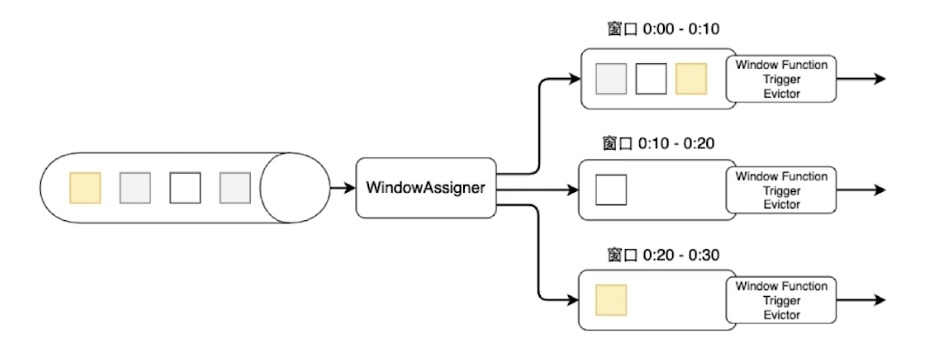
- Window Assigner
- 将数据流中的元素分配到对应窗口中
- Window Funtion
- 满足窗口触发条件后由Window Funtion进行处理
- 增量计算（Aggregate，Reduce，Fold）：sum，min，max
- 全量计算（窗口内全部一起算）：process
- SideOutupt：流切分，标签化后输出output接口，getSideOutPut(sideOutPutTag)
- 结果体现在状态上
- Trigger将其结果输出
- Window
- TIme
- Sliding 滑动窗口
- 窗口以固定步长（Slide）向前滑动，长度（Window Size）固定
- Slide < Size 数据可以被重复计算
- Slide > Size 数据可能不在任何一个窗口内
- Tumbling 滚动窗口
- 窗口之间不重叠且长度是固定的
- 特殊的滑动窗口 Slide = Size
- Session 会话窗口
- 当一个窗口在大于Session gap的时间内没有接到新的数据，窗口关闭
- Size可变
- Global 全局窗口
- 有所有的数据
- Sliding 滑动窗口
- Count
- TIme
- Window Trigger
- 何时启动 Window Function 以及将窗口内的数据清理
- 触发一次：Processing Time / Water mark 大于窗口结束时间触发；
- 触发多次：固定时间间隔 / Count数量 / 和上次触发的元素Delta计算 / Puring别人触发完后清理
- 何时启动 Window Function 以及将窗口内的数据清理
- Window Evictor
- 数据清除器（可选组件） Count / Time / Delta
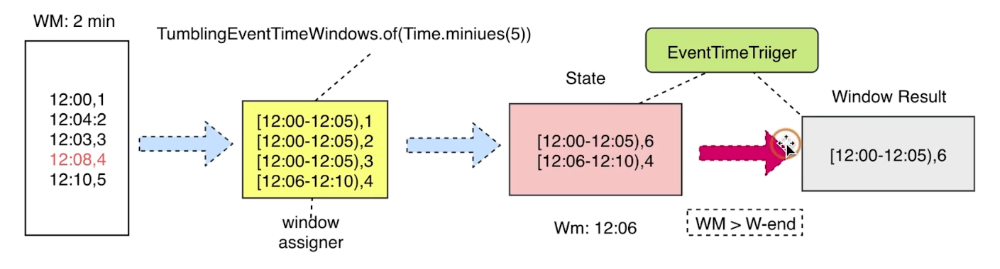
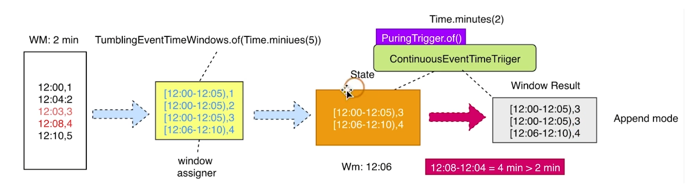
图的转换过程¶
pipline -> stream图 -> job图，job作业提交后转换成excute图。
New Source API （流批一体）¶
Bounded File Source
- 每个 Split 是一个文件或文件的一部分；
- SplitEnumerator 列举 除指定文件夹下的全部文件，并逐个发给 reader；
- SourceReader 接收到 splits 后根据 inputFormat 读取数据；
- SourceReader 接收到 NoMoreSplits 消息是，会完成并停止。
Unbounded Streaming File Source
- SplitEnumerator 不会发送 NoMoreSplits 消息；
- 而是周期性的读取 URI/Path 的地址，获取新文件，进而转化为 Splits 发送给 reader。
6. 有状态计算¶
无状态计算：计算和存储分离
有状态计算：计算的中间结果保存在本地
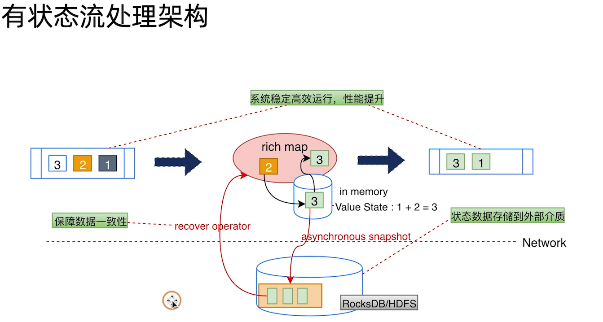
问题：
- 端到端数据一致性如何保证？
- 状态数据如何恢复？
- 状态后端存储如何选择
- 如何snapshot
- 状态如何存储更新
状态分类¶
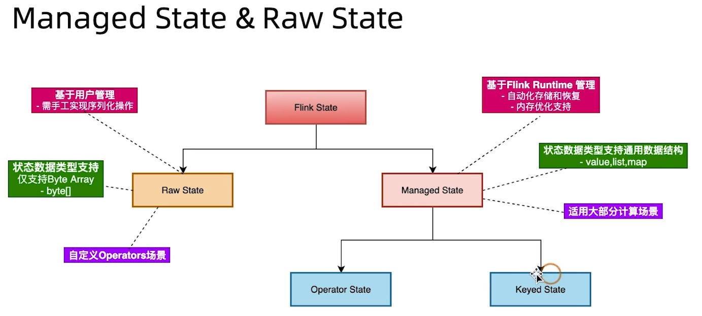
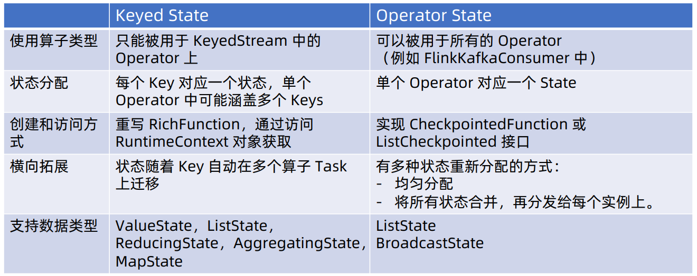
CheckPoint¶
将算子中的状态数据异步持久化到文件系统中。Chandy-Lamport算法？
JobManager: CheckPoint Coordinator: 触发 Source 节点的 checkpoint（1. 将自己的状态持久化；2. 向下游广播 barrier；3. 完成后通知 coordinator 备份的地址）
CheckPoint Barrier 将 DataStream 切成多个批次，多个 DataStream 对齐。Operator 对齐 barrier 后状态持久化。
Sink 接收到 barrier 后通知 coordinator，checkpoint 过程结束，将元数据持久化。
SavePoint¶
用户主动控制，作业停止前备份，永久存储（CheckPoint停止后会被删除）
7. Fink Table & SQL¶
批流一体，一套SQL运行在流数据和批数据上。
Calcite解析SQL
Temporal Tables 时态表¶
基于表的参数化视图概念，返回表在某个特定的时间点的内容
- 创建注册时态表函数（需要时间属性和主键）不支持常量时间属性查询，只能在join里
- FOR SYSTEM_TIME AS OF TIME = ''；必须使用 lookupTableSource（比如hbase，redis）关联条件是key
Catalogs¶
提供了元数据信息，例如数据库表、分区、视图、函数。可以是临时的也可以是持久化的。
Catalog提供了一个统一的API，用于管理元数据使其可以从table API 和 SQL 查询语句中来访问。
- CenericInMemoryCatalog
- 默认的，基于内存的，只在session生命周期可用
- JdbcCatalog
- 基于jdbc连接数据库获取元数据，只支持postgreSql
- HiveCatalog
- 基于HIveMetaStore
- 用户自定义Catalog
Catalog 在 flink 中主要服务 Calcite
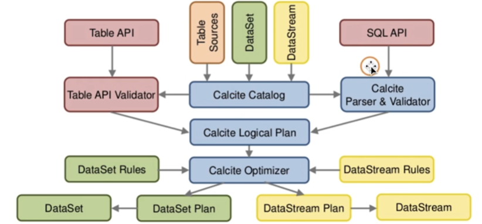
DDL操作就是对catalog操作？
自定义函数¶
函数类型维度：
- 系统内置函数，Catalog函数
- 临时函数，持久化函数
系统内置函数：
- Scalar Func 标量函数
- Aggregate Func 聚合函数
- Column Func 列处理
自定义函数：
- Scalar Func 输出单个scalar
- Table Func 输出任意数量rows或structured types类型记录
- Aggregation Func 输出单个scalar
- Table Aggregation Func 输出多个rows
- Async table Func
自定义connector¶
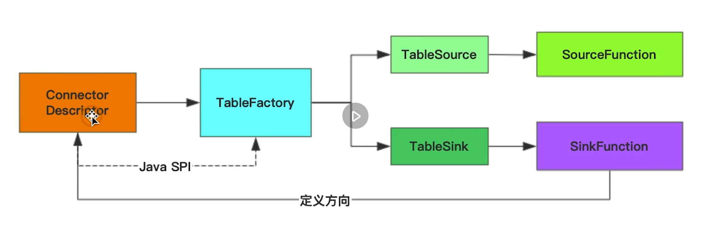
使用 Java SPI 技术去灵活加载不同 connector。Connecyor Descriptor 通过不同参数去匹配具体的 TableFactory（requiredContext() 方法指定了该实现必须有的参数） 实现。
8. Fink Runtime¶
整体架构包含：
- JobManager（Master）
- TaskManager（Worker）
- Client
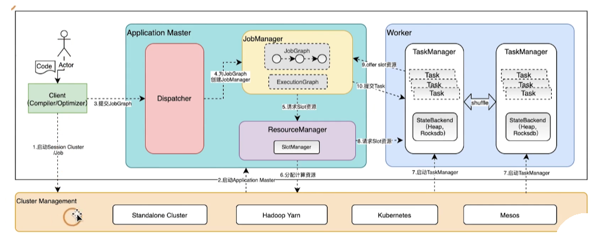
Flink作业提交流程¶
Flink Client： Application 用户写的作业代码 -> OptimizedPlan 批；StreamGraph 流 -> 转换为 JobGraph -> ClusterClient 跟集群进行Rpc交互，提交 JobGraph
Flink Runtime： Dispatcher 接受 JobGraph -> 生成 JobManager (Rpc节点，一个线程) -> ExecutionGraph -> 调度后生成物理执行图
4种Graph转换¶
- Program -> StreamGraph（StateBackend，迭代计算，userArtifacts，拓扑关系，TimeCharacteristic，配置信息）
- StreamGraph -> JobGraph （包含 Forward 类型边的算子合并为一个 Operator Chain，转换为 JobGraph 里的 JobVertex，即可以在同一个 task 内运行的算子进行合并，减少数据的网络传输）
- JobGraph -> ExecutionGraph（JobVertex 根据并行度拆分成 ExecutionVertex）
- Execution -> 物理执行计划 （每个ExecutionVertex 生成一个 task，IntermediateResult 根据下游并行度分成 ResultSubPartition 进行缓冲，InputGate 输入到下游）
Task Failover¶
尝试重启，策略：1、Fix-delay；2、Failure-rate。
重启方式：1、重启全部 task；2、仅重启涉及的 pipline region
网络交互¶
- RPC
- 集群组件之间的交互、客户端与集群交互
- AKKA -> Actor System：每一个组件就是一个 actor
- Network stack
- task 之间数据交换
- Netty：上游 TaskManager 建立 Netty Server 下游 TaskManager 建立 Netty Client，形成 tcp 通道。不同的 task 复用这个通道通信
- 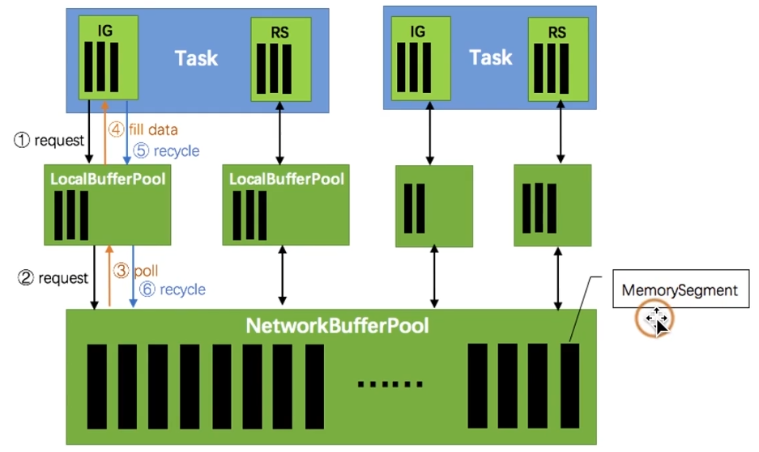
反压¶
上下游算子处理速率不匹配，下游算子消费速率小于上游算子生产速率，造成堆积，会发事件给上游算子，降低处理速率。降低速率的事件会层层向上传递。
- 5.0 之前版本利用 tcp管道满了之后会阻塞的性质，实现反压。确定是不同 subtask 对 tcp 进行多路复用，一个堵了其他全堵。
- 基于 credit 反压：
- 下游向上游发送 credit：下游包含exclusive buffer pool（task专有）和 floating buffer pool（多task共享），credit 就是 task 可用的空闲 buffer 数量，初始时为 exclusive pool 的大小。
- 上游向下游发送数据和 backlog 大小：上游发送 credit 个 buffer，并把剩下的数量 backlog 大小一并发送给下游。下游根据 backlog 大小可能去 floating buffer pool 申请 buffer，并把新的 credit 发送给上游。
内存¶
| 组成部分 | 描述 |
|---|---|
| 框架堆内存（Framework Heap Memory） | 用于 Flink 框架的 JVM 堆内存 |
| 任务堆内存（Task Heap Memory） | 用于算子及用户代码的堆内存，任务之间软隔离，与框架堆内存一起受 Xmx 限制 |
| 托管内存（Manged Memory） | 由 Flink 管理的用于排序、哈希表、缓存中间结果及 RockDB State Backend 的本地内存。各个任务之间严格隔离 |
| 框架对外内存（Framework Off-heap Memory） | 计算及用户代码的堆外内存（直接内存或本地内存） |
| 网络内存（Network Memory） | 用于任务之间传输数据的直接内存（网络传输缓冲）。slot 之间没有隔离。该内存部位为基于总内存的受限等比内存部分 |
| JVM Metaspace | JVM 进程元数据 |
| JVM 开销 | 基于其他 JVM 开销的本地内存，如栈空间、垃圾回收空间等。该内存部位为基于总内存的受限等比内存部分 |
组件栈¶
- Complex Event Process：复杂事件处理，检测事件流，类似于在流上正则匹配？
- Stateful Function：Flink负责状态存储？http调用FaaS？